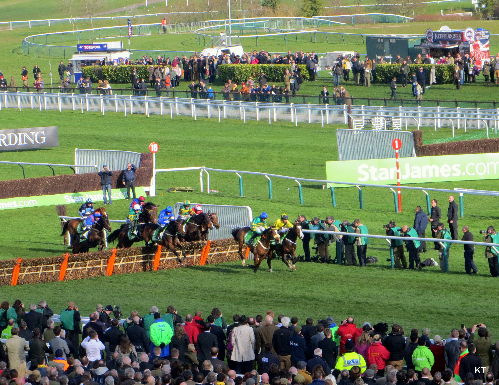

Use this site to keep up to date with Irish and UK racing.
On the racemeetings page you can view the upcoming race meetings for the next 30 days as and when they are available on Betfair. Click the upcoming race meetings button to view.
On the racemeetings page you can also view the upcoming races listed chronologically. The races included are those listed on Betfair for the race meetings above. Click the Upcoming Races button to view.
On the horseviewer page you can see info on all the horses stored in our database. The data is stored in our database from betfair. You can update it manually using the buttons provided.
Unfortunately the races tracker with predictions is still under construction. Check back soon it will be available shortly !!
